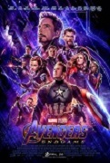
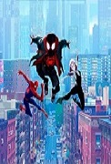
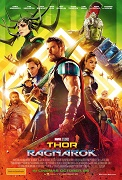
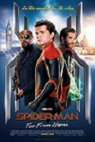

| HOME | EXERCISE 1 | EXERCISE 2 | EXERCISE 3 | EXERCISE 4 | EXERCISE 5 | EXERCISE 6 | EXERCISE 7 | EXERCISE 8 |
|---|
Spider-Man: Into the Spider-Verse
|  |  |  |  |
|---|
After the devastating events of Avengers: Infinity War (2018), the universe is in ruins due to the efforts of the Mad Titan, Thanos. With the help of remaining allies, the Avengers must assemble once more in order to undo Thanos's actions and undo the chaos to the universe, no matter what consequences may be in store, and no matter who they face...
The grave course of events set in motion by Thanos, that wiped out half the universe and fractured the Avengers ranks, compels the remaining Avengers to take one final stand in Marvel Studios' grand conclusion to twenty-two films - Avengers: Endgame.
After half of all life is snapped away by Thanos, the Avengers are left scattered and divided. Now with a way to reverse the damage, the Avengers and their allies must assemble once more and learn to put differences aside in order to work together and set things right. Along the way, the Avengers realize that sacrifices must be made as they prepare for the ultimate final showdown with Thanos, which will result in the heroes fighting the biggest battle they have ever faced.
Teen Miles Morales becomes the Spider-Man of his universe, and must join with five spider-powered individuals from other dimensions to stop a threat for all realities.
Phil Lord and Christopher Miller, the creative minds behind The Lego Movie and 21 Jump Street, bring their unique talents to a fresh vision of a different Spider-Man Universe, with a groundbreaking visual style that's the first of its kind. "Spider-Man(TM): Into the Spider-Verse" introduces Brooklyn teen Miles Morales (Shameik Moore), and the limitless possibilities of the Spider-Verse, where more than one can wear the mask.
Miles Morales has just started at a new school and is struggling to fit in. Then he is bitten by a radioactive spider and he obtains certain powers, similar to those of Spiderman. He doesn't know what to do with the powers, or how to control them, so naturally he turns to Spider-Man for advice.
Struggling to find his place in the world, while juggling school and family, Miles Morales, a smart teenager from Brooklyn, reluctantly enrols in an elite New York City boarding school. Wrestling with his new responsibilities, Miles discovers a whole new world hidden at an abandoned NYC subway tunnel, only to get bitten by a stealthy radioactive arachnid from another dimension. Now, gifted with unfathomable powers, much like the original Spider-Man (2002), Miles is shocked to discover that life has become even more complicated, unbeknownst to him that he is about to get caught in the middle of a dreadful inter-dimensional conflict. More and more, with the fate of the multiverse hanging by a thread, young and utterly inexperienced Miles has no other choice but to master his newfound abilities, even though he believes that not everyone is cut out to be a hero. But, a hero isn't the one who always wins. It's the one who always tries. Can Miles take a leap of faith, and become Spider-Man?
Detective Sherlock Holmes and his stalwart partner Watson engage in a battle of wits and brawn with a nemesis whose plot is a threat to all of England.
After finally catching serial killer and occult "sorcerer" Lord Blackwood, legendary sleuth Sherlock Holmes and his assistant Dr. Watson can close yet another successful case. But when Blackwood mysteriously returns from the grave and resumes his killing spree, Holmes must take up the hunt once again. Contending with his partner's new fiancée and the dimwitted head of Scotland Yard, the dauntless detective must unravel the clues that will lead him into a twisted web of murder, deceit, and black magic - and the deadly embrace of temptress Irene Adler.
In London, Sherlock Holmes and his partner Dr. John Watson captures the follower of black magic and serial killer Lord Blackwood that has already killed five women when he is near to kill his sixth victim. Blackwood is sentenced to be strung up and Dr. Watson attests his death. However, Blackwood mysteriously returns from the afterlife and Inspector Lestrade summons Sherlock Holmes to help the Scotland Yard in the investigation. Meanwhile Dr. Watson intends to get married of the gorgeous Mary Morstan while Sherlock is visited by his former lover Irene Adler that has a secret agenda.
With the arrest of Lord Blackwood, Sherlock Holmes and Dr. John Watson believe they have stopped one of London's most dangerous killers, responsible for five deaths and about to commit a sixth when he is apprehended. Several months later he is hanged for his crimes but rumors begin to circulate that he is in fact still alive, having used managed and the black arts to escape society's judgment. When they disinter his remains, they find the body of another man in the coffin. Soon, all of London is atwitter with the news that Blackwood has risen from the dead and for some, he is the devil incarnate. With the assistance of the very capable Irene Adler, Holmes and Watson must stop Blackwood before he can initiate his master plan: the takeover of the British government and eventually, world domination.
As a spate of ritualistic murders terrorises late-1800s Victorian London, the lithe pugilist and debauched detective with the uncanny sense of deduction, Sherlock Holmes, and his acutely observant brother-in-arms, Dr Watson, manage to send to the gallows their occultist arch-enemy, Lord Blackwood. However, evil knows no boundaries--and as the disquieting rumours that the fiendish practitioner of the black arts has eluded death start to spread like wildfire--a mysterious copycat picks up where the deceased aristocrat left off. Now, against the backdrop of rampant superstition, Sherlock's feisty old flame with a hidden agenda, Irene Adler, has returned to further complicate matters, as the seemingly resurrected Blackwood continues his reign of terror. Has the dark lord, indeed, returned from the dead? Is he intent on slaughter and destruction?
Imprisoned on the planet Sakaar, Thor must race against time to return to Asgard and stop Ragnarök, the destruction of his world, at the hands of the powerful and ruthless villain Hela.
Imprisoned on the other side of the universe, the mighty Thor (Chris Hemsworth) finds himself in a deadly gladiatorial contest that pits him against The Incredible Hulk (Mark Ruffalo), his former ally and fellow Avenger. Thor's quest for survival leads him in a race against time to prevent the all-powerful Hela (Cate Blanchett) from destroying his home world and the Asgardian civilization.
After the events of Avengers: Age of Ultron (2015), and four years after the events of Thor: The Dark World (2013), Thor (Chris Hemsworth), held captive on the planet Sakaar without his hammer, must win a gladiatorial duel against The Incredible Hulk (Mark Ruffalo) and assemble a team (made up of The Incredible Hulk, Valkyrie (Tessa Thompson), Thor, and Loki (Tom Hiddleston)) to stop the villainous Hela (Cate Blanchett) and the impending Ragnarök, the doom of the Asgardian civilization.
Four years after defeating the Dark Elves and two years after the fight in Sokovia, Thor (Chris Hemsworth) now finds himself trapped on the other side of the universe on the wacky planet of Sakaar. Meanwhile, a new threat rises as the evil Hela, Goddess of Death (Cate Blanchett) takes over Asgard and plans to conquer the universe. In order to get home, Thor must compete in a gladiator match against the defending champion of the Grandmaster (Jeff Goldblum). Little does Thor know is that the champion is his old friend and fellow Avenger, The Incredible Hulk (Mark Ruffalo). Teaming with The Incredible Hulk and his deceptive brother Loki (Tom Hiddleston), Thor must return home to Asgard in time to stop Hela and prevent the approaching Ragnarök, the apocalyptic destruction of Asgard.
Odin (Sir Anthony Hopkins) has died and Thor (Chris Hemsworth) discovers that he has a sister, Hela, the Goddess of Death (Cate Blanchett). She is incredibly powerful and malevolent, and claims the throne to Asgard, killing anyone who opposes her. Thor and Loki (Tom Hiddleston) accidentally end up on Sakaar, a planet run by the The Grandmaster (Jeff Goldblum), part-tyrant, part-ringmaster. Thor is imprisoned on the planet and forced to fight to the death against The Grandmaster's champion... The Incredible Hulk (Mark Ruffalo).
Following the events of Avengers: Endgame (2019), Spider-Man must step up to take on new threats in a world that has changed forever.
Our friendly neighborhood Super Hero decides to join his best friends Ned, MJ, and the rest of the gang on a European vacation. However, Peter's plan to leave super heroics behind for a few weeks are quickly scrapped when he begrudgingly agrees to help Nick Fury uncover the mystery of several elemental creature attacks, creating havoc across the continent.
Some time after Thanos was defeated and Tony Stark's sacrifice, Peter Parker returns to high school. Now, Peter is out to see the world with his classmates and is wanting to take a break from being Spider-Man. But his fun filled trip is suddenly sabotaged when a string of mysterious attacks by creatures called Elementals start wreaking havoc all over the world. To make matters more difficult, Peter finds himself recruited by Nick Fury and an inter dimensional newcomer named Quentin Beck/Mysterio to help fight them and uncover the truth behind the attacks.
Shortly after the cataclysmic events of Avengers: Endgame (2019), Peter Parker is yearning for normalcy in a post-Blip world. To blow off steam, Parker and his classmates from the Mid-town School of Science and Technology go on a two-week summer field trip to Europe, and this time, he is determined to ask his crush, MJ, out. However, Nick Fury, the no-nonsense founder of the Avengers, has other plans in store for the sixteen-year-old super-hero, as the Elementals, all-powerful, inter-dimensional creatures formed from the primary elements, start to materialise on Earth, wreaking havoc across the world. Surprisingly, only one man has stood up against this new form of threat and managed to tell the tale: Mysterio, a brave new hero. As humankind's latest adversary threatens to wipe Venice off the face of the Earth, Spider-Man joins forces with Mysterio to lend a hand in the battle, only to make a calamitous mistake. In the end, was Tony Stark wrong about Peter?
References:
.jpg){kind=link}
{kind=link}
{kind=link}
{kind=link}
{kind=link}